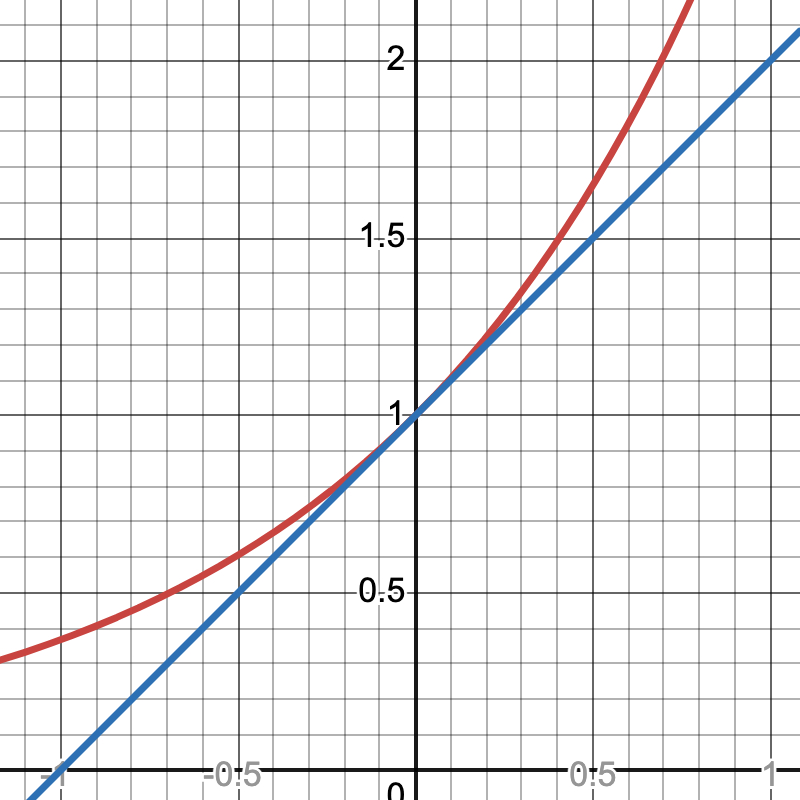

Geometric series are particularly nice, but there are other series as well. Let’s look at the constant series \(\sum\limits_{n = 0}^{\infty} \frac{1}{2}\). It should be clear that it diverges: the partial sums are \(\frac{1}{2}, 1, \frac{3}{2}, 2, \frac{5}{2}, ...\) which continue to get bigger and bigger. Similarly, the series \(\sum\limits_{n = 0}^{\infty} \frac{1}{1000000}\) also diverges, even if it grows pretty slowly. Moreover there is a nice theorem that generalizes both of these:
Theorem: If \(\lim\limits_{n \rightarrow \infty} a_n \neq 0\), then \(\sum\limits_{n=0}^{\infty} a_n\) diverges.
That is: if the limit of a sequence either does not exist, or exists but is not 0, then the sum of that sequence diverges. This is known as the Divergence Test .
For example, the series \(0 + \frac{1}{2} + \frac{2}{3} + \frac{3}{4} + \frac{4}{5} + \ldots\) diverges, since the sequence can be written as \(a_n = \frac{n}{n+1}\). This sequence approaches \(1\), and so the series diverges.
The Divergence Theorem tells you directly which series diverge. But does it tell you anything about which series must converge? Not necessarily. For example, the “Harmonic Series” diverges! It goes off to infinity quite slowly, but it does, in fact, go off to infinity. We will explore its divergence later.
One way to tell is by graphing the function \(f(x) = \frac{1}{x}\) and drawing in the “Riemann sum” approximations.
Figure 5.12 from your textbook: the sum of \(1+1/2+1/4+...+1/n+...\) is lager than the integral from 1 to infinity of \(1/x\). Notice that the rectangles are all above the graph, and, therefore, we can see: \[\sum_{n = 1}^{\infty} \frac{1}{n} \geq \int_1^{\infty} \frac{1}{x} dx\] Further, we know how to compute this integral: since the antiderivative of \(\frac{1}{x}\) is \(\ln(x)\), this integral can be computed as the limit as \(b \rightarrow \infty\) of \(\ln(b) - \ln(1)\), which is \(\infty\). Therefore, the series must also diverge.
Now let’s look at the series \(\sum\limits_{n = 1}^{\infty} \frac{1}{n^2}\). We can similarly compare it to the integral of \(f(x) = \frac{1}{x^2}\). In fact, there are two ways we can compare it:
and
Notice that this means that if \[\int_1^\infty \frac{1}{x^2} dx\] converges, then so does \[\sum_{n=1}^{\infty} \frac{1}{n^2}\] and if the integral diverges, then so does the series. And, again, we know how to compute the integral: \[\begin{aligned} &\lim_{b \rightarrow \infty} \int_1^b \frac{1}{x^2} dx \\ &= \lim_{b \rightarrow \infty} (-\frac{1}{b} + 1) \\ &= 1 \end{aligned}\]
Since the integral converges, the series also converges. This is known as the Integral Test:
suppose \((a_n)\) is a sequence of positive terms, and \(f(x)\) is a function with the following properties:
\(f(x)\) is decreasing
\(f(x)\) is continues
there is some \(N\) such that for all \(n\geq N\), \(a_n = f(n)\)
Them either \(\int_N^{\infty} f(x) dx \textrm{ and } \sum_{n = 1}^{\infty} a_n\) both converge or they both diverge. Note that this does not necessarily mean that they both converge to the same value: we can see that the integral of \(\frac{1}{x^2}\) from \(1\) to \(\infty\) converged to \(1\). But the series actually converges to \(\frac{\pi^2}{6}\): this is known as the Basel problem
Therefore, I indeed know nothing except that I know that I know nothing.
— Nicole Oresme
Nicole Oresme (1323–1382) was a brilliant philosopher, psychologist, economist, mathematician, physicist, astronomer, and musicologist, a passionate theologian, a competent translator, counselor of King Charles V of France, Bishop of Lisieux, one of the principal founders of modern sciences, probably the most original thinker of the 14th century and — so to speak — the "French Einstein of the 14th century."
There is a long tradition that says that Nicole Oresme was also the tutor to the dauphin (who later became Charles V), but this is not quite certain. Charles appeared to have had the highest esteem for Oresme’s character and talents, often followed his counsel, and made him write many works in French for the purpose of popularizing the sciences and of developing a taste for learning in the kingdom.
In his works, Oresme mentioned concepts translated as longitude and latitude. This was a seed from which the idea of an orthogonal coordinate system grew. He showed that his method of determining the latitude of forms could be applied to the movement of a point, provided that time is taken as longitude and speed as latitude; quantity is then the space covered in a given time.
Nicole was also fascinated by the Greeks’ discovery that the infinite series of the reciprocals of powers of 2 converges to 2.
Consider: \[1 + \frac{1}{2} + \frac{1}{4} + \frac{1}{8} + \cdots + \frac{1}{2^n} + \cdots\]
The partial sums are: \[1 + \frac{1}{2} = \frac{3}{2} = 2 - \frac{1}{2},\] \[1 + \frac{1}{2} + \frac{1}{4} = \frac{7}{4} = 2 - \frac{1}{4},\] \[1 + \frac{1}{2} + \frac{1}{4} + \frac{1}{8} = \frac{15}{8} = 2 - \frac{1}{8},\] \[1 + \frac{1}{2} + \frac{1}{4} + \frac{1}{8} + \frac{1}{16} = \frac{31}{16} = 2 - \frac{1}{16},\] \[\vdots\]
We observe the pattern: \[1 + \frac{1}{2} + \frac{1}{4} + \frac{1}{8} + \cdots + \frac{1}{2^n} = 2 - \frac{1}{2^n}.\]
As \(n \to \infty\), \(2^n \to \infty\), so \(\frac{1}{2^n} \to 0\), and thus the sum approaches 2.
Oresme also considered the sum of the reciprocals of all integers: \[1 + \frac{1}{2} + \frac{1}{3} + \frac{1}{4} + \frac{1}{5} + \cdots + \frac{1}{n} + \cdots\]
Unlike the powers of 2, this sum increases without bound and diverges to infinity. To see this, group the terms as follows:
\[\frac{1}{2},\] \[\frac{1}{3} + \frac{1}{4},\] \[\frac{1}{5} + \frac{1}{6} + \frac{1}{7} + \frac{1}{8},\] \[\frac{1}{9} + \cdots + \frac{1}{16},\] \[\frac{1}{17} + \cdots + \frac{1}{32},\] \[\vdots\]
Each group has \(1, 2, 4, 8, 16, 32, \dots\) terms, respectively. Each term in the \(k\)-th group is greater than or equal to \(\frac{1}{2^{k}}\), so each group’s sum is larger than \(\frac{1}{2}\). Thus, by continuing indefinitely, we can collect infinitely many halves, and therefore the harmonic series diverges.
Geometrically there are infinite blue rectangles each with area 1/2, yet their total area is exceeded by that of the grey bars denoting the harmonic series.
Nicole Oresme’s proof of the divergence of the harmonic series fell into obscurity and was rediscovered in the 17th century by Pietro Mengoli, Johann Bernoulli, and Jacob Bernoulli.
The name "harmonic" comes from music: the wavelengths of the overtones of a vibrating string are \(\frac{1}{2}\), \(\frac{1}{3}\), \(\frac{1}{4}\), etc., of the string’s fundamental wavelength.
Harmonic sequences were popular among Baroque architects, who used them to establish proportions of floor plans, elevations, and harmonic relationships between architectural details.
Infinite series became extremely important in the 17th and 18th centuries, allowing mathematicians to compute values of logarithms, roots, and trigonometric functions with high precision.
The seventeenth-century German mathematician and philosopher Leibniz (1646–1716) discovered the following series for \(\pi\):
\[\pi = 4\left(1 - \frac{1}{3} + \frac{1}{5} - \frac{1}{7} + \frac{1}{9} - \frac{1}{11} + \cdots\right)\]
It is remarkable that the ratio of a circle’s circumference to its diameter is four times the alternating sum of the reciprocals of all odd numbers.
In the TV series Star Trek, Spock defeats an evil computer by asking it to compute the last digit of \(\pi\). Since \(\pi\) is irrational, it has no "last" digit.
Polynomial functions are the easiest functions to work with in calculus. They are continuous and differentiable everywhere, we can use the power rule to take derivatives, and the “reverse” power rule to find antiderivatives. These techniques are so powerful that students often mistake all functions for polynomials (perhaps due to a bit of wishful thinking).
It would be nice if we could approximate any function we want using polynomials. Recall that in Calculus I, we found linear approximations to functions using derivatives. Indeed, the tangent line to the graph of a function stays really close to the function itself. Take a look at this graph of \(y=e^x\) and the tangent line at \(x=0\), \(y=x+1\):

Notice that really close to \(x=0\), the graphs almost overlap. That means that the graph of \(y=x+1\) approximates the graph of \(y=e^x\) near \(x=0\). In general, given a graph \(y=f(x)\) the tangent line to the graph at \(x=a\) is the best linear approximation of the function \(y=f(x)\) near \(x=a\): \[y = f(a) + f^\prime(a) (x - a)\] We can similarly find quadratic approximations or cubic approximations to functions. This is the idea behind power series (or more specifically, Taylor series).
Definition: A power series is an infinite sum of polynomials.
For example, we will be studying the following power series:\[p(x) = \sum_{n = 0}^{\infty} x^n\] Notice that when we plug in a number for \(x\), we get an infinite series, and we can determine if converges or not for that value of \(x\) (using the convergence tests we learned recently).
Example: \(p(x)=1 + x + x^2 + \ldots\)
\(p(0)=1\) (converges)
\(p(1)=1+1+1+\ldots\) (diverges)
\(p(-1)=1-1+1-1\ldots\) (also diverges)
\(p(\frac{1}{2})=1+\frac{1}{2}+\frac{1}{4}+\ldots=2\) (converges)
\(p(2)=1+2+4+8\ldots\) (diverges)
More generally: \(p(x)\) converges for all \(x\) such that \(x<1\), and diverges otherwise. This is because it’s a geometric series! In particular, we even know what it converges to: the series \(\sum x^n\) is a geometric series with \(a=1\) and \(r=x\), and so it converges to \(\frac{1}{1-x}\) for all \(x<1\).
The nice thing about power series is that we can use the normal rules for derivatives and integrals of polynomials. For example, since \(p(x) = 1 + x + x^2 + \ldots\) , \[p^\prime(x) = 1 + 2x + 3x^2 + \ldots\]
Symbolically, we can do something very similar using the closed form for the series. Since \(p(x) = \sum\limits_{n=0}^{\infty} x^n\), taking the derivative of each term we get \(p^\prime(x) = \sum\limits_{n=1}^{\infty} nx^{n-1}\). Notice that when we take the derivative, the \(n=0\) term goes away (since the derivative of a constant is 0). We can then re-write \(p^\prime(x) = \sum\limits_{n=1}^{\infty} nx^{n-1}\) as \(\sum\limits_{n=0}^{\infty} (n+1) x^n\), by shifting the value of \(n\) over by one.
Similarly, we can integrate, term-by-term, the series \(p^\prime(x) = 1 + 2x + 3x^2 + \ldots\) and, since \(p(x) = \frac{1}{1 - x}\) when \(|x|<1\), this will be the same as integrating \(\frac{1}{1 - x}\) , at least for those \(x\) in that interval, \[\int \sum_{n=0}^{\infty} x^n dx = C + \sum_{n=0}^{\infty} \frac{x^{n+1}}{n+1}\]
Or: \(\int p(x) dx = C + \sum\limits_{n=1}^{\infty} \frac{x^n}{n}\)
Notice that \(\int \frac{1}{1-x} dx = -\ln|1 - x| + C\), and so for \(|x|<1\), this gives us a power series representation for \(-\ln|1-x|\). In particular, when \(x=0\), \(\ln|1|=0\), we have that \(-\ln|1 - x| = \sum\limits_{n=1}^{\infty} \frac{x^n}{n}\) for all \(|x|<1\).
This series converges for all \(|x|<1\), similar to the series \(1+x+x^2+x^3+\ldots\). What about if \(x=1\) or \(x=-1\)?
If \(x=1\) we get the harmonic series \(\sum \frac{1}{n}\), which we know diverges (using the integral test).
If \(x=-1\) , we get the alternating harmonic series \(\sum \frac{(-1)^n}{n}\), which converges (using the alternating series test). And now we can actually see why \(\sum \frac{(-1)^n}{n}\) converges to \(\ln(2)\): \[\begin{aligned}
-\ln(1 - (-1)) &= \sum_{n=1}^{\infty} \frac{(-1)^n}{n} \\
-\ln(2) &= \sum_{n=1}^{\infty} \frac{(-1)^n}{n} \\
\ln(2) &= -\sum_{n=1}^{\infty} \frac{(-1)^n}{n} \\
\ln(2) &= \sum_{n=1}^{\infty} \frac{(-1)^{n+1}}{n}\end{aligned}\] And so the series \(1 - \frac{1}{2} + \frac{1}{3} - \frac{1}{4} + \ldots\) converges to \(\ln(2)\).
We have studied the functions \(f(x) = \frac{1}{1-x}\) and its “power series representation” \(p(x) = \sum\limits_{n=0}^{\infty} x^n\). We notice that \(p(x)\) converges for \(|x|<1\).
Specifically, we have looked at power series centered around \(x=0\). A power series centered at \(x=0\) looks like a function of the form \[f(x) = \sum_{n=0}^{\infty} a_n x^n\] where \(a_n\) is an infinite sequence. Since \(f(x) = a_0 + a_1 x + a_2 x^2 + \ldots\), if we plug \(x=0\), we get \(f(0)=a_0\), and so \(f(0)\) converges! What if \(x \neq 0\)? There are three possibilities:
\(f(x)\) might converge for all \(x\)
\(f(x)\) might diverge for all \(x\neq 0\)
there is some real number \(R\) such that if \(-R<x<R\), then \(f(x)\) converges
That third point can be stated as "\(f(x)\) converges in some interval of radius \(R\) centered around \(0\).” If \(x=R\) or \(x=-R\), \(f(x)\) may or may not converge (more specific analysis might be needed for that).
More generally, we could study series centered at any \(x\)-value. A series centered at \(x=5\) might look like \[p(x) = \sum_{n=0}^{\infty} a_n (x - 5)^n\] Or even more generally, a power series centered at \(x=x_0\) would look like\[p(x) = \sum_{n=0}^{\infty} a_n (x - x_0)^n\] Notice that \(p(x) = a_0 + a_1 (x - x_0) + a_2 (x-x_0)^2 + \ldots\), and so \(p(x_0) = a_0 + 0 + 0 + \ldots\)
Therefore \(p(x_0)\) converges! Similarly, there are three possibilities for whether \(p(x)\) converges for \(x\neq 0\):
\(p(x)\) might converge for all \(x\)
\(P(x)\) might diverge for all \(x\neq 0\)
there is some real number \(R\) such that if \(-R<x-x_0<R\), then \(p(x)\) converges
This \(R\) is referred to as the radius of convergence of the power series around \(x=x_0\). In case (1), we say that the radius of convergence is \(\infty\), and in case (2), the radius of convergence is \(0\).
How do we find the radius of convergence? We use the ratio test. For example, let’s look at the power series \(\sum \frac{x^n}{n}\). Applying the ratio test to the terms of this series, we get:
\(a_{n+1} = \frac{x^{n+1}}{n + 1}\)
\(a_{n} = \frac{x^{n}}{n}\)
Dividing, we get \(\frac{x^{n+1}}{n + 1} \cdot \frac{n}{x^n} = x \cdot \frac{n}{n+1}\). Now we look at the limit as \(n \rightarrow \infty\) of \(|x \cdot \frac{n}{n+1} |\), which is just \(|x|\). Since the ratio test says that the series converges absolutely if \(L<1\), we see that we must have \(|x|<1\). Therefore our radius of convergence is 1.
Example: \(\frac{x^n}{n!}\)
Lastly we look at the series \(f(x) = \sum\limits_{n=0}^{\infty} \frac{x^n}{n!}\). This is the series \(1 + x + \frac{x^2}{2} + \frac{x^3}{6} + \frac{x^4}{24} + \ldots\).
Notice two things about this series:
\(1 + 0 + 0 + \ldots = 1\)
\(f^\prime(x) = 1 + \frac{2x}{2} + \frac{3x}{6} + \frac{4x}{24} + \ldots\) and is we simplify these fractions, we’ll see:
\(f^\prime (x)=f(x)\)
In particular, \(f(x)\) is a solution to an initial value problem:
\(y^\prime=y\)
\(y(0)=1\)
If we try to solve this using our methods of solving differential equations, we would get \(y=e^x\). This means, if the power series \(f(x)\) converges, it must converge to \(e^x\)! So let’s see where it actually converges by finding the radius of convergence.
Since \(a_{n+1} = \frac{x^{n+1}}{(n+1)!}\) and \(a_n = \frac{x^n}{(n)!}\), we can compute the ratio: \[|\frac{a_{n+1}}{a_n}| = |\frac{x^{n+1}}{(n+1)!} \cdot \frac{n!}{x^n}|\] Simplifying, we get: \[\frac{|x|}{n+1}\] As \(n \rightarrow \infty\) the expression approaches 0 no matter what \(x\) is.Therefore this power series converges absolutely for every \(x\). In particular, we see that \(f(x)=e^x\) for all \(x\).
Take a look at this animation on Desmos, which shows that as we take more and more terms of this infinite sum, we get a polynomial that approximates the graph of \(e^x\) really well: